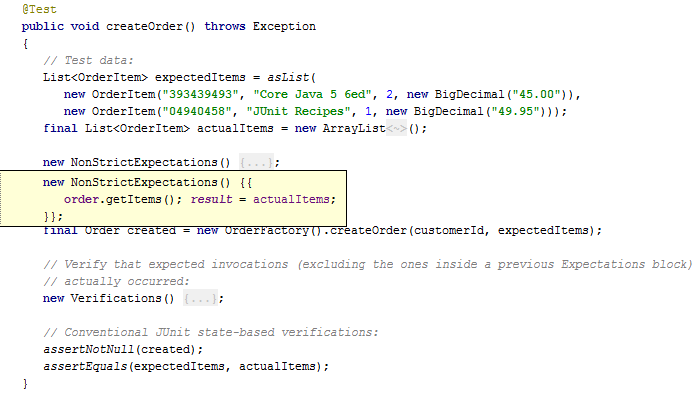

In the JMockit toolkit, the Expectations API provides rich support for the creation of behavior-based unit tests. The focus when doing this kind of testing is on the behavior of the unit the test, as expressed through its interactions with other units it depends upon. Typically, a unit of behavior is embodied in a single class, but it's also fine to consider a whole set of strongly-related classes as a single unit for the purposes of unit testing (as is usually the case when we have a central public class with one or more helper classes, possibly package-private); in general, individual methods should not be regarded as separate units on their own.
An interaction between two units always takes the form of a method or constructor invocation. The set of invocations from a unit under test to its dependencies, together with the argument and return values passed between them, define the behavior of interest for the tests of that particular unit. In addition, a given test may need to verify the relative order of execution between multiple invocations.
Note that a unit test only exercises the code of the tested unit. The implementation code behind dependencies is not meant to be exercised, since it's not part of the unit under test. So, the goal of unit testing is to test logical units of behavior in isolation from the actual behavior of its dependencies. Now, we typically do not want nor need to isolate a given unit from all its dependencies, but only from those that a) already have (or will have) their own unit tests in the same test suite; or b) for practical reasons cannot be easily, quickly, or reliably executed in a unit test environment (because they write to a database, send emails, and so on). When coding the tests for a particular unit, we simply assume that its dependencies behave according to expectations. If they don't, it is the responsibility of their own tests to catch the unexpected behavior.
Methods and constructors invoked from the unit under test, and which belong to a dependency of said unit, are the
usual targets for mocking.
Mocking provides the mechanism that we need in order to isolate the tested unit from (some of) its dependencies.
We specify which particular dependencies are to be mocked for a given test (or tests) by declaring suitable mock
fields and/or mock parameters; mock fields are declared as annotated instance fields of the test class,
while mock parameters are declared as annotated parameters of a test method.
The type of the dependency to be mocked will be the type of the mock field or parameter.
Such a type can be any kind of reference type: an interface, a class (including
abstract and final ones), an annotation, or an enum.
By default, all methods of the mocked type will be mocked for the duration of the test.
If the declared mocked type is a class, then all of its super-classes up to but not including
java.lang.Object will also be mocked, recursively.
Therefore, inherited methods will automatically be mocked as well.
Again in the case of a class, all of its constructors will also get mocked.
Even more, whatever Java language modifiers happen to be applied to the methods/constructors of a mocked class, they
will still get mocked: private, static, final, native, it doesn't
really matter.
When a method or constructor is mocked, its original implementation code won't be executed for invocations occurring during the test. Instead, the call will be redirected to JMockit so it can be dealt with in the manner that was explicitly or implicitly specified for the test.
The following example test skeleton serves as a basic illustration for the declaration of mock fields and mock parameters, as well as the way in which they are typically used in test code. In this tutorial, we use many code snippets like this, where the parts in bold font are the current focus of explanation.
// "Dependency" is mocked for all tests in this test class.
// The "mockInstance" field holds a mocked instance automatically created for use in each test.
@Mocked Dependency mockInstance;
@Test
public void doBusinessOperationXyz(@Mocked final AnotherDependency anotherMock)
{
...
new Expectations() {{ // an "expectation block"
...
// Record an expectation, with a given value to be returned:
mockInstance.mockedMethod(...); result = 123;
...
}};
...
// Call the code under test.
...
new Verifications() {{ // a "verification block"
// Verifies an expected invocation:
anotherMock.save(any); times = 1;
}};
...
}
For a mock parameter declared in a test method, an instance of the declared type will be automatically created by
JMockit and passed by the JUnit/TestNG test runner when it executes the test method;
therefore, the parameter value will never be null.
For a mock field, an instance of the declared type will be automatically created by JMockit and assigned to the
field, provided it's not final.
There are a few different annotations available for the declaration of mock fields and parameters, and ways in which
the default mocking behavior can be modified to suit the needs of a particular test.
Other sections of this chapter go into the details, but the basics are:
@Mocked is the central mocking annotation, having a few optional attributes
which are useful in particular situations; @Injectable is another
mocking annotation, which constrains mocking to the instance methods of a single mocked instance; and
@Capturing is yet another mocking annotation, which extends mocking to
the classes implementing a mocked interface, or the subclasses extending a mocked class.
When @Injectable or @Capturing is applied to a mock
field or mock parameter, @Mocked is implied so it doesn't need to (but can) be
applied as well.
The mocked instances created by JMockit can be used normally in test code (for the recording and verification of
expectations), and/or passed to the code under test. Or they may simply go unused.
Differently from other mocking APIs, these mocked objects don't have to be the ones used by the unit under
test when it calls instance methods on its dependencies.
By default (ie, when @Injectable is not used), JMockit does not care on which object
a mocked instance method is called.
This allows the transparent mocking of instances created directly inside code under test, when said code invokes
constructors on brand new instances using the new operator;
the classes instantiated must be covered by mocked types declared in test code, that's all.
An expectation is a set of invocations to a specific mocked method/constructor that is relevant for a given test. An expectation may cover multiple different invocations to the same method or constructor, but it doesn't have to cover all such invocations that occur during the test execution. Whether a particular invocation matches a given expectation or not will depend not only on the method/constructor signature but also on runtime aspects such as the instance on which the method is invoked, argument values, and/or the number of invocations already matched. Therefore, several types of matching constraints can (optionally) be specified for a given expectation.
When we have one or more invocation parameters involved, an exact argument value may be specified for each parameter.
For example, the value "test string" could be specified for a String parameter, causing the
expectation to match only those invocations with this exact value in the corresponding parameter.
As we will see later, instead of specifying exact argument values, we can specify more relaxed constraints which will
match whole sets of different argument values.
The example below shows an expectation for Dependency#someMethod(int, String), which will match an
invocation to this method with the exact argument values as specified.
Notice that the expectation itself is specified through an isolated invocation to the mocked method.
There are no special API methods involved, as is common in other mocking APIs.
This invocation, however, does not count as one of the "real" invocations we are interested in testing.
It's only there so that the expectation can be specified.
@Test
public void doBusinessOperationXyz(@Mocked final Dependency mockInstance)
{
...
new Expectations() {{
...
// An expectation for an instance method:
mockInstance.someMethod(1, "test"); result = "mocked";
...
}};
// A call to the unit under test occurs here, leading to mock invocations
// that may or may not match specified expectations.
}
We will see more about expectations later, after we understand the differences between recording, replaying, and verifying invocations.
Any developer test can be divided in at least three separate execution phases. The phases execute sequentially, one at a time, as demonstrated below.
@Test
public void someTestMethod()
{
// 1. Preparation: whatever is required before the unit under test can be exercised.
...
// 2. The unit under test is exercised, usually by calling a public method.
...
// 3. Verification: whatever needs to be checked to make sure the exercised unit
// did its job.
...
}
First, we have a preparation phase, where objects and data items needed for the test are created or obtained from somewhere else. Then, the unit under test is exercised. Finally, the results from exercising the tested unit are compared with the expected results.
This model of three phases is also known as the Arrange, Act, Assert syntax, or "AAA" for short. Different words, but the meaning is the same.
In the context of behavior-based testing with mocked types (and their mocked instances), we can identify the following alternative phases, which are directly related to the three previously described conventional testing phases:
Behavior-based tests written with JMockit will typically fit the following templates:
import mockit.*;
... other imports ...
public class SomeTest
{
// Zero or more "mock fields" common to all test methods in the class:
@Mocked Collaborator mockCollaborator;
@Mocked AnotherDependency anotherDependency;
...
@Test
public void testWithRecordAndReplayOnly(mock parameters)
{
// Preparation code not specific to JMockit, if any.
new Expectations() {{ // an "expectation block"
// One or more invocations to mocked types, causing expectations to be recorded.
// Invocations to non-mocked types are also allowed anywhere inside this block
// (though not recommended).
}};
// Unit under test is exercised.
// Verification code (JUnit/TestNG assertions), if any.
}
@Test
public void testWithReplayAndVerifyOnly(mock parameters)
{
// Preparation code not specific to JMockit, if any.
// Unit under test is exercised.
new Verifications() {{ // a "verification block"
// One or more invocations to mocked types, causing expectations to be verified.
// Invocations to non-mocked types are also allowed anywhere inside this block
// (though not recommended).
}};
// Additional verification code, if any, either here or before the verification block.
}
@Test
public void testWithBothRecordAndVerify(mock parameters)
{
// Preparation code not specific to JMockit, if any.
new Expectations() {{
// One or more invocations to mocked types, causing expectations to be recorded.
}};
// Unit under test is exercised.
new VerificationsInOrder() {{ // an ordered verification block
// One or more invocations to mocked types, causing expectations to be verified
// in the specified order.
}};
// Additional verification code, if any, either here or before the verification block.
}
}
There are other variations to the above templates, but the essence is that the expectation blocks belong to the record phase and come before the unit under test is exercised, while the verification blocks belong to the verify phase. A test method can contain any number of expectation blocks, including none. The same is true for verification blocks.
The fact that anonymous inner classes are used to demarcate blocks of code allows us to take advantage of the "code folding" feature available in modern Java IDEs. The following image shows what it looks like in IntelliJ IDEA.

Expectations recorded inside a
"new Expectations() {...}" block are the regular ones.
What this means is that the invocations they specify are expected to occur at least once during the
replay phase; they may occur more than once, though, and in a different order relative to other recorded
expectations; additionally, invocations that don't match any recorded expectation are allowed to occur in any number
and in any order.
If no invocation matches a given recorded expectation, a "missing invocation" error gets thrown at the end of the
test, causing it to fail (this is only the default behavior, though, as it can be overridden).
The API also supports the concept of strict expectations: those that, when recorded, only allow invocations during replay that exactly match the recordings (within explicitly specified allowances, when needed), both in the number of matching invocations (exactly one, by default) and in the order they occur. Invocations that occur during replay but fail to match a recorded strict expectation are regarded as unexpected, causing an immediate "unexpected invocation" error, and consequently failing the test. This is achieved by using the StrictExpectations subclass.
Finally, we can record non-strict (or loose) expectations, through the
NonStrictExpectations subclass.
Inside a non-strict expectation block, all invocations to mocked types will be allowed to occur during the
replay phase, in any number (including zero) and in any order.
The recording of non-strict expectations is recommended for test setup methods only, such as a JUnit
@Before method or the TestNG equivalent.
Note that in the case of strict expectations, all invocations occurring during replay that match recorded
expectations are implicitly verified.
Any remaining invocations that don't match an expectation are considered unexpected, causing the test to fail.
The test will also fail if any recorded strict expectation is missed, ie, if no matching invocations occur during
replay.
By default, none of these constraints apply to non-strict expectations, which are usually explicitly
verified through verification blocks written with mockit.Verifications or one of its
subclasses.
We can mix expectations of different levels of strictness in the same test by writing multiple expectation blocks,
some regular (using Expectations), others strict (using
StrictExpectations), others non-strict (using
NonStrictExpectations).
Normally, a given mock field or mock parameter will appear in expectation blocks of a single kind, though.
Most tests will simply make use of "regular" expectations. Usage of strict expectations is probably more a matter of personal preference, while the usage of non-strict expectations tends to occur only in setup methods.
Note that we do not specify that a given mocked type/instance should be strict or non-strict.
Instead, the strictness for a given mock field/parameter is determined by how it is used in the test.
Once the first strict expectation is recorded in a "new StrictExpectations() {...}" block, the
associated mocked type/instance is considered to be strict for the whole test; otherwise, it will be not
strict.
For a given method with non-void return type, a return value can be recorded through an assignment to
the result field.
When the method gets called in the replay phase, the specified return value will be returned to the caller (which
normally is the unit under test).
The assignment to result should appear right after the invocation that identifies the recorded
expectation, inside an expectation block.
If the test instead needs an exception or error to be thrown when the method is invoked, then the result
field can still be used: simply assign the desired throwable instance to it.
Note that the recording of exceptions/errors to be thrown is applicable to mocked methods (of any return type) as
well as to mocked constructors.
Multiple consecutive results (values to return and/or throwables to throw) can be recorded for the same
expectation, by simply assigning the result field multiple times in a row.
The recording of multiple return values and/or exceptions/errors to be thrown can be freely mixed for the same
expectation.
In the case of recording multiple consecutive return values for a given expectation, a single call to the
returns(Object...)
method can be made.
Also, a single assignment to the result field will achieve the same effect, if the value assigned to it
is a list or array containing the consecutive values.
The following example test records both types of results for the methods of a mocked
DependencyAbc class, to be used when they are invoked from a
UnitUnderTest class.
Lets say the implementation of the class under test goes like this:
public class UnitUnderTest
{
(1)private final DependencyAbc abc = new DependencyAbc();
public void doSomething()
{
(2) int n = abc.intReturningMethod();
for (int i = 0; i < n; i++) {
String s;
try {
(3) s = abc.stringReturningMethod();
}
catch (SomeCheckedException e) {
// somehow handle the exception
}
// do some other stuff
}
}
}
A possible test for the doSomething() method could exercise the case where
SomeCheckedException gets thrown, after an arbitrary number of successful iterations.
Assuming that we want (for whatever reasons) to record a complete set of expectations for the interaction
between these two classes, we might write the test below.
(Often, it's not desirable or important to specify all invocations to mocked methods and - specially -
mocked constructors in a given test. We will address this issue later.)
@Test
public void doSomethingHandlesSomeCheckedException(@Mocked final DependencyAbc abc) throws Exception
{
new Expectations() {{
(1) new DependencyAbc();
(2) abc.intReturningMethod(); result = 3;
(3) abc.stringReturningMethod();
returns("str1", "str2");
result = new SomeCheckedException();
}};
new UnitUnderTest().doSomething();
}
This test records three different expectations.
The first one, represented by the call to the DependencyAbc() constructor, merely accounts for the fact
that this dependency happens to be instantiated in the code under test through the no-args constructor; no result
needs to be specified for such an invocation, except for the occasional exception/error to be thrown (constructors
have void return type, so it makes no sense to record return values for them).
The second expectation specifies that intReturningMethod() will return 3 when called.
The third one specifies a sequence of three consecutive results for stringReturningMethod(), where the
last result happens to be an instance of the desired exception, allowing the test to achieve its goal (note that it
will only pass if the exception is not propagated out).
Previously, we explained that an expectation recorded on a mocked instance, such as
"abc.someMethod();" would actually match invocations to
DependencyAbc#someMethod() on any instance of the mocked
DependencyAbc class.
In most cases, tested code uses a single instance of a given dependency, so this won't really matter and can
be safely ignored, whether the mocked instance is passed into the code under test or created inside
it.
But what if we need to verify that invocations occur on a specific instance, between several ones that
happen to be used in the code under test?
Also, what if only one or a few instances of the mocked class should actually be mocked, with other instances of the
same class remaining unmocked?
(This second case tends to occur more often when classes from the standard Java libraries, or from other third-party
libraries, are mocked.)
JMockit provides a mocking annotation, @Injectable, which will only mock one
instance of the mocked type, leaving others unaffected.
Additionally, it provides a couple ways to constrain the matching of expectations to specific
@Mocked instances, while still mocking all instances of the mocked class.
Suppose we need to test code which works with multiple instances of a given class, some of which we want to mock.
If an instance to be mocked can be passed or injected into the code under test, then we can declare
an @Injectable mock field or mock parameter for it.
The @Injectable instance created by JMockit will be an "exclusive" mocked instance;
any other instance of the same mocked type, unless obtained from a separate mock field/parameter, will remain as a
regular, non-mocked instance.
Note also that, since having an injectable mocked instance is supposed to affect the behavior of only that instance,
static methods and constructors are also excluded from being mocked.
After all, a static method is not associated with any instance of the class, while a constructor is
only associated with a newly created (and therefore different) instance.
For an example, lets say we have the following class to be tested.
public final class ConcatenatingInputStream extends InputStream
{
private final Queue<InputStream> sequentialInputs;
private InputStream currentInput;
public ConcatenatingInputStream(InputStream... sequentialInputs)
{
this.sequentialInputs = new LinkedList<InputStream>(Arrays.asList(sequentialInputs));
currentInput = this.sequentialInputs.poll();
}
@Override
public int read() throws IOException
{
if (currentInput == null) return -1;
int nextByte = currentInput.read();
if (nextByte >= 0) {
return nextByte;
}
currentInput = sequentialInputs.poll();
return read();
}
}
This class could easily be tested without mocking by using ByteArrayInputStream objects for
input, but lets say we want to make sure that the InputStream#read() method is properly invoked on each
input stream passed in the constructor.
The following test will achieve this.
@Test
public void concatenateInputStreams(
@Injectable final InputStream input1, @Injectable final InputStream input2)
throws Exception
{
new Expectations() {{
input1.read(); returns(1, 2, -1);
input2.read(); returns(3, -1);
}};
InputStream concatenatedInput = new ConcatenatingInputStream(input1, input2);
byte[] buf = new byte[3];
concatenatedInput.read(buf);
assertArrayEquals(new byte[] {1, 2, 3}, buf);
}
Note that the use of @Injectable is indeed necessary here, since the class under test
extends the mocked class, and the method called to exercise ConcatenatingInputStream is
actually defined in the base InputStream class.
If InputStream was mocked "normally", the read(byte[]) method would always be
mocked, regardless of the instance on which it is called.
onInstance(m) constraint
When using @Mocked or @Capturing (and not
@Injectable on the same mock field/parameter), we can still match replay invocations
to expectations recorded on specific mocked instances.
For that, we use the
onInstance(mockObject) method when
recording the expectation, as the next example shows.
@Test
public void matchOnMockInstance(@Mocked final Collaborator mock)
{
new Expectations() {{
onInstance(mock).getValue(); result = 12;
}};
// Exercise unit under test with mocked instance passed from the test:
int result = mock.getValue();
assertEquals(12, result);
// If another instance is created inside code under test...
Collaborator another = new Collaborator();
// ...we won't get the recorded result, but the default one:
assertEquals(0, another.getValue());
}
The test above will only pass if the unit under test (here embedded in the test method itself, for brevity)
invokes getValue() on the exact same instance on which the recording invocation was made.
This is typically useful when the unit under test makes calls on two or more different instances of the same type,
and the test wants to verify that each invocation occurred on the proper instance.
To avoid the need to use onInstance(m) on every expectation when testing code which uses multiple
instances of the same type in different ways, JMockit automatically infers the need for "onInstance" matching based
on the set of mocked types in scope.
Specifically, whenever two or more mock fields/parameters of the exact same type are in scope for a given test,
invocations to instance methods made on their instances will always match expectations recorded on those same
instances.
Therefore, in such common situations it isn't necessary to explicitly use the onInstance(m) method.
Specifically for future instances that will later get created by code under test, JMockit provides a couple
mechanisms through which we can match invocations on them.
Both mechanisms require the recording of an expectation on a specific constructor invocation (a
"new" expression) of the mocked class.
The first mechanism involves simply using the new instance obtained from the recorded constructor expectation, when recording expectations on instance methods. Lets see an example.
@Test
public void newCollaboratorsWithDifferentBehaviors(@Mocked Collaborator anyCollaborator)
{
// Record different behaviors for each set of instances:
new Expectations() {{
// One set, instances created with "a value":
Collaborator col1 = new Collaborator("a value");
col1.doSomething(anyInt); result = 123;
// Another set, instances created with "another value":
Collaborator col2 = new Collaborator("another value");
col2.doSomething(anyInt); result = new InvalidStateException();
}};
// Code under test:
new Collaborator("a value").doSomething(5); // will return 123
...
new Collaborator("another value").doSomething(0); // will throw the exception
...
}
In the above test, we declare a single mock field or mock parameter of the desired class, using
@Mocked.
This mock field/parameter, however, is not used when recording expectations; instead, we use the instances
created on instantiation recordings to record further expectations on instance methods.
The future instances created with matching constructor invocations will map to those recorded instances.
Also, note that it's not necessarily a one-to-one mapping, but a many-to-one mapping, from potentially many future
instances to a single instance used for recorded expectations.
The second mechanism lets us record a replacement instance for those future instances that match a recorded constructor invocation. With this alternative mechanism, we can rewrite the test as follows.
@Test
public void newCollaboratorsWithDifferentBehaviors(
@Mocked final Collaborator col1, @Mocked final Collaborator col2)
{
new Expectations() {{
// Map separate sets of future instances to separate mock parameters:
new Collaborator("a value"); result = col1;
new Collaborator("another value"); result = col2;
// Record different behaviors for each set of instances:
col1.doSomething(anyInt); result = 123;
col2.doSomething(anyInt); result = new InvalidStateException();
}};
// Code under test:
new Collaborator("a value").doSomething(5); // will return 123
...
new Collaborator("another value").doSomething(0); // will throw the exception
...
}
Both versions of the test are equivalent. The second one also allows, when combined with partial mocking, for real (non-mocked) instances to be used as replacements.
In both the record and verify phases, an invocation to a mocked method or constructor identifies an
expectation.
If the method/constructor has one or more parameters, then a recorded/verified expectation like
doSomething(1, "s", true); will only match an invocation in the replay phase if it has
equal argument values.
For arguments that are regular objects (not primitives or arrays), the equals(Object) method is used for
equality checking.
For parameters of array type, equality checking extends to individual elements; therefore, two different array
instances having the same length in each dimension and equal corresponding elements are considered equal.
In a given test, we often don't know exactly what those argument values will be, or they simply aren't essential for
what is being tested.
So, to allow a recorded or verified invocation to match a whole set of replayed invocations with different argument
values, we can specify flexible argument matching constraints instead of actual argument values.
This is done by using anyXyz fields and/or withXyz(...) methods.
The "any" fields and "with" methods are all defined in mockit.Invocations, which is the
base class for all the expectation/verification classes used in tests;
therefore, they can be used in expectation as well as verification blocks.
The most common argument matching constraint tends also to be the least restrictive one: to match
invocations with any value for a given parameter (of the proper parameter type, of course).
For such cases we have a whole set of special argument matching fields, one for each primitive type (and the
corresponding wrapper class), one for strings, and a "universal" one of type Object.
The test below demonstrates some uses.
@Test
public void someTestMethod(@Mocked final DependencyAbc abc)
{
final DataItem item = new DataItem(...);
new Expectations() {{
// Will match "voidMethod(String, List)" invocations where the first argument is
// any string and the second any list.
abc.voidMethod(anyString, (List<?>) any);
}};
new UnitUnderTest().doSomething(item);
new Verifications() {{
// Matches invocations to the specified method with any value of type long or Long.
abc.anotherVoidMethod(anyLong);
}};
}
Uses of "any" fields must appear at the actual argument positions in the invocation statement, never
before.
You can still have regular argument values for other parameters in the same invocation, though.
For more details, see the API documentation.
When recording or verifying an expectation, calls to the withXyz(...) methods can occur for any subset
of the arguments passed in the invocation.
They can be freely mixed with regular argument-passing (using literal values, local variables, etc.).
The only requirement is that such calls appear inside the recorded/verified invocation statement, rather than before
it.
It's not possible, for example, to first assign the result of a call to withNotEqual(val) to a local
variable and then use the variable in the invocation statement.
An example test using some of the "with" methods is shown below.
@Test
public void someTestMethod(@Mocked final DependencyAbc abc)
{
final DataItem item = new DataItem(...);
new Expectations() {{
// Will match "voidMethod(String, List)" invocations with the first argument
// equal to "str" and the second not null.
abc.voidMethod("str", (List<?>) withNotNull());
// Will match invocations to DependencyAbc#stringReturningMethod(DataItem, String)
// with the first argument pointing to "item" and the second one containing "xyz".
abc.stringReturningMethod(withSameInstance(item), withSubstring("xyz"));
}};
new UnitUnderTest().doSomething(item);
new Verifications() {{
// Matches invocations to the specified method with any long-valued argument.
abc.anotherVoidMethod(withAny(1L));
}};
}
There are more "with" methods than shown above. See the API documentation for more details.
Besides the several predefined argument matching constraints available in the API, JMockit allows the user to provide custom constraints, through the with(Delegate) and withArgThat(Matcher) methods.
null value to match any object reference
When using at least one argument matching method or field for a given expectation, we can use a "shortcut" to specify
that any object reference should be accepted (for a parameter of reference type).
Simply pass the null value instead of a withAny(x) or any argument matcher.
In particular, this avoids the need to cast the value to the declared parameter type.
However, bear in mind that this behavior is only applicable when at least one explicit argument matcher
(either a "with" method or an "any" field) is used for the expectation.
When passed in an invocation that uses no matchers, the null value will match only the null
reference.
In the previous test, we could therefore have written:
@Test
public void someTestMethod(@Mocked final DependencyAbc abc)
{
...
new Expectations() {{
abc.voidMethod(anyString, null);
}};
...
}
To specifically verify that a given parameter receives the null reference, the
withNull() matcher can be used.
Occasionally we may need to deal with expectations for "varargs" methods or constructors. It's valid to pass regular values as a varargs argument, and also valid to use the "with"/"any" matchers for such values. However, it's not valid to combine both kinds of value-passing for the same expectation, when targeting a varargs parameter. We need to either use only regular values or only values obtained through argument matchers.
In case we want to match invocations where the varargs parameter receives any number of values (including zero),
we can specify an expectation with the "(Object[]) any" constraint for the final
varargs parameter.
Probably the best way to understand the exact semantics of varargs matching (since there is no specific API involved) is to look at or experiment with actual tests. This test class demonstrates virtually all possibilities.
So far, we saw that besides an associated method or constructor, an expectation can have invocation results and argument matchers. Given that the unit under test can call the same method or constructor multiple times with different or identical arguments, we sometimes need a way to account for all those separate invocations.
The number of invocations expected and/or allowed to match a given expectation can be specified through invocation count constraints. The mocking API provides three special fields just for that: times, minTimes, and maxTimes. These fields can be used either when recording or when verifying expectations. In either case, the method or constructor associated with the expectation will be constrained to receive a number of invocations that falls in the specified range. Any invocations less or more than the expected lower or upper limit, respectively, and the test execution will automatically fail. Lets see some example tests.
@Test
public void someTestMethod(@Mocked final DependencyAbc abc)
{
new Expectations() {{
// By default, at least one invocation is expected, i.e. "minTimes = 1":
new DependencyAbc();
// At least two invocations are expected:
abc.voidMethod(); minTimes = 2;
// 1 to 5 invocations are expected:
abc.stringReturningMethod(); minTimes = 1; maxTimes = 5;
}};
new UnitUnderTest().doSomething();
}
@Test
public void someOtherTestMethod(@Mocked final DependencyAbc abc)
{
new UnitUnderTest().doSomething();
new Verifications() {{
// Verifies that zero or one invocations occurred, with the specified argument value:
abc.anotherVoidMethod(3); maxTimes = 1;
// Verifies the occurrence of at least one invocation with the specified arguments:
DependencyAbc.someStaticMethod("test", false); // "minTimes = 1" is implied
}};
}
Unlike the result field, each of these three fields can be specified at most once for a given
expectation.
Any non-negative integer value is valid for any of the invocation count constraints.
If times = 0 or maxTimes = 0 is
specified, the first invocation matching the expectation to occur during replay (if any) will cause the test to fail.
Besides specifying invocation count constraints on recorded expectations, we can also verify matching invocations explicitly in a verification block, after the call to the code under test. This is valid for regular and non-strict expectations, but not for strict expectations, since they are always verified implicitly; there is no point in re-verifying them in a explicit verification block.
Inside a "new Verifications() {...}" block we can use
the same API that's available in a "new Expectations() {...}" block, with the exception of methods and
fields used to record return values and thrown exceptions/errors.
That is, we can freely use the anyXyz fields, the withXyz(...) argument matching methods,
and the times, minTimes, and maxTimes invocation count constraint fields.
An example test follows.
@Test
public void verifyInvocationsExplicitlyAtEndOfTest(@Mocked final Dependency mock)
{
// Nothing recorded here, though it could be.
// Inside tested code:
Dependency dependency = new Dependency();
dependency.doSomething(123, true, "abc-xyz");
// Verifies that Dependency#doSomething(int, boolean, String) was called at least once,
// with arguments that obey the specified constraints:
new Verifications() {{ mock.doSomething(anyInt, true, withPrefix("abc")); }};
}
Note that, by default, a verification checks that at least one matching invocation occurred during replay.
When we need to verify an exact number of invocations (including 1), the times = n
constraint must be specified.
To do this inside a verification block, add a "times = 0" assignment right after the
invocation that is expected to not have happened during the replay phase.
If one or more matching invocations did happen, the test will fail.
Regular verification blocks created with the Verifications class are unordered.
The actual relative order in which aMethod() and anotherMethod() were called during the
replay phase is not verified, but only that each method was executed at least once.
If you want to verify the relative order of invocations, then a
"new VerificationsInOrder() {...}" block must be
used instead.
Inside this block, simply write invocations to one or more mocked types in the order they are expected to have
occurred.
@Test
public void verifyingExpectationsInOrder(@Mocked final DependencyAbc abc)
{
// Somewhere inside the tested code:
abc.aMethod();
abc.doSomething("blah", 123);
abc.anotherMethod(5);
...
new VerificationsInOrder() {{
// The order of these invocations must be the same as the order
// of occurrence during replay of the matching invocations.
abc.aMethod();
abc.anotherMethod(anyInt);
}};
}
Note that the call abc.doSomething(...) was not verified in the test, so it could have occurred
at any time (or not at all).
Suppose you want to verify that a particular method (or constructor) was called before/after other invocations, but you don't care about the order in which those other invocations occurred. Inside an ordered verification block, this can be achieved by simply calling the unverifiedInvocations() method at the appropriate place(s). The following test demonstrates it.
@Mocked DependencyAbc abc;
@Mocked AnotherDependency xyz;
@Test
public void verifyingTheOrderOfSomeExpectationsRelativeToAllOthers()
{
new UnitUnderTest().doSomething();
new VerificationsInOrder() {{
abc.methodThatNeedsToExecuteFirst();
unverifiedInvocations(); // Invocations not verified must come here...
xyz.method1();
abc.method2();
unverifiedInvocations(); // ... and/or here.
xyz.methodThatNeedsToExecuteLast();
}};
}
The example above is actually quite sophisticated, as it verifies several things:
a) a method that must be called before others; b) a method that must be called after others;
and c) that AnotherDependency#method1() must be called just before DependencyAbc#method2().
In most tests, we will probably only do one of these different kinds of order-related verifications.
But the power is there to make all kinds of complex verifications quite easily.
Another situation not covered by the examples above is one where we want to verify that certain invocations occurred
in a given relative order, while also verifying the other invocations (in any order).
For this, we need to write two separate verification blocks, as illustrated below (where mock is a mock
field of the test class).
@Test
public void verifyFirstAndLastCallsWithOthersInBetweenInAnyOrder()
{
// Invocations that occur while exercising the code under test:
mock.prepare();
mock.setSomethingElse("anotherValue");
mock.setSomething(123);
mock.notifyBeforeSave();
mock.save();
new VerificationsInOrder() {{
mock.prepare(); // first expected call
unverifiedInvocations(); // others at this point
mock.notifyBeforeSave(); // just before last
mock.save(); times = 1; // last expected call
}};
// Unordered verification of the invocations previously left unverified.
// Could be ordered, but then it would be simpler to just include these invocations
// in the previous block, at the place where "unverifiedInvocations()" is called.
new Verifications() {{
mock.setSomething(123);
mock.setSomethingElse(anyString);
}};
}
Usually, when a test has multiple verification blocks their relative order of execution is important.
In the previous test, for example, if the unordered block came before it would have left no "unverified invocations"
to match a later call to unverifiedInvocations();
the test would still pass (assuming it originally passed) since it's not required that unverified invocations
actually occurred at the called position, but it would not have verified that the unordered group of
invocations occurred between the first and last expected calls.
Sometimes it may be important to have all invocations to the mocked types involved in a test verified.
This is automatically the case when recording strict expectations, since any unexpected invocation causes the test to
fail.
When regular or non-strict expectations are explicitly verified, though, a
"new FullVerifications() {...}" block can be used
to make sure that no invocations are left unverified.
@Test
public void verifyAllInvocations(@Mocked final Dependency mock)
{
// Code under test included here for easy reference:
mock.setSomething(123);
mock.setSomethingElse("anotherValue");
mock.setSomething(45);
mock.save();
new FullVerifications() {{
// Verifications here are unordered, so the following invocations could be in any order.
mock.setSomething(anyInt); // verifies two actual invocations
mock.setSomethingElse(anyString);
mock.save(); // if this verification (or any other above) is removed the test will fail
}};
}
Note that if a lower limit (a minimum invocation count constraint) is specified for an expectation, then this constraint will always be implicitly verified at the end of the test. Therefore, explicitly verifying such an expectation inside the full verification block is not necessary.
So, we have seen how to do unordered verifications with Verifications,
ordered verifications with VerificationsInOrder, and full verifications with
FullVerifications.
But what about full ordered verifications? Easy enough:
@Test
public void verifyAllInvocationsInOrder(@Mocked final Dependency mock)
{
// Code under test included here for easy reference:
mock.setSomething(123);
mock.setSomethingElse("anotherValue");
mock.setSomething(45);
mock.save();
new FullVerificationsInOrder() {{
mock.setSomething(anyInt);
mock.setSomethingElse(anyString);
mock.setSomething(anyInt);
mock.save();
}};
}
Notice there is a not so obvious difference in semantics, though.
In the verifyAllInvocations test above, we were able to match two separate
mock.setSomething(...) invocations with a single invocation in the verification block.
In the verifyAllInvocationsInOrder test, however, we had to write two separate invocations to that
method inside the block, in the proper order with respect to other invocations.
By default, all invocations to all mocked instances/types in effect for a given test must be
verified explicitly when using a "new FullVerifications() {}" or
"new FullVerificationsInOrder() {}" block.
Now, what if we have a test with two (or more) mocked types but we only want to fully verify invocations to one of
them (or to any subset of mocked types when more than two)?
The answer is to use the
FullVerifications(mockedTypesAndInstancesToVerify) constructor, where only the given mocked instances and
mocked types (ie, class objects/literals) are considered.
The following test provides an example.
@Test
public void verifyAllInvocationsToOnlyOneOfTwoMockedTypes(
@Mocked final Dependency mock1, @Mocked AnotherDependency mock2)
{
// Inside code under test:
mock1.prepare();
mock1.setSomething(123);
mock2.doSomething();
mock1.editABunchMoreStuff();
mock1.save();
new FullVerifications(mock1) {{
mock1.prepare();
mock1.setSomething(anyInt);
mock1.editABunchMoreStuff();
mock1.save(); times = 1;
}};
}
In the test above, the mock2.doSomething() invocation is never verified.
To restrict verification only to the methods/constructors of a single mocked class, pass the class literal to the
FullVerifications(...) or FullVerificationsInOrder(...) constructor.
For example, the new FullVerificationsInOrder(AnotherDependency.class) { ... } block would only make
sure that all invocations to the mocked AnotherDependency class were verified.
To verify that no invocations at all occurred on the mocked types/instances used in a test, add an
empty full verification block to it.
As always, note that any expectations that were recorded as expected through a specified
times/minTimes constraint are verified implicitly and therefore disregarded by the full verification
block; in such a case the empty verification block will verify that no other invocations occurred.
Additionally, if any expectations were verified in a previous verification block in the same test, they are
also disregarded by the full verification block.
If the test uses two or more mocked types/instances and you want to verify that no invocations occurred for some of them, specify the desired mocked types and/or instances in the constructor to the empty verification block. An example test follows.
@Test
public void verifyNoInvocationsOnOneOfTwoMockedDependenciesBeyondThoseRecordedAsExpected(
@Mocked final Dependency mock1, @Mocked final AnotherDependency mock2)
{
new Expectations() {{
// These two are recorded as expected:
mock1.setSomething(anyInt);
mock2.doSomething(); times = 1;
}};
// Inside code under test:
mock1.prepare();
mock1.setSomething(1);
mock1.setSomething(2);
mock1.save();
mock2.doSomething();
// Will verify that no invocations other than to "doSomething()" occurred on mock2:
new FullVerifications(mock2) {};
}
A full verification block (ordered or not) also allows us to verify that certain methods and/or constructors never
get invoked, without having to record or verify each one of them with a corresponding times = 0
assignment.
The following test provides an example.
@Test
public void readOnlyOperation(@Mocked final Dependency mock)
{
new Expectations() {{
mock.getData(); result = "test data";
}};
// Code under test:
String data = mock.getData();
// mock.save() should not be called here
...
new FullVerifications() {{
mock.getData(); minTimes = 0; // calls to getData() are allowed, others are not
}};
}
If a call to any method (or constructor) of the Dependency class occurs during the replay
phase, except for the ones explicitly verified in the verification block (Dependency#getData() in this
case), then the test above will fail.
On the other hand, it may be easier to use strict expectations in such cases, without any verification block at all.
Invocation arguments can be captured for later verification through a set of special "withCapture(...)"
methods.
There are three different cases, each with its own specific capturing method:
1) verification of arguments passed to a mocked method, in a single invocation: T withCapture();
2) verification of arguments passed to a mocked method, in multiple invocations:
T withCapture(List<T>); and
3) verification of arguments passed to a mocked constructor: List<T> withCapture(T).
To capture arguments from a single invocation to a mocked method or constructor, we use "withCapture()",
as the following example test demonstrates.
@Test
public void capturingArgumentsFromSingleInvocation(@Mocked final Collaborator mock)
{
// Inside tested code:
new Collaborator().doSomething(0.5, new int[2], "test");
new Verifications() {{
double d;
String s;
mock.doSomething(d = withCapture(), null, s = withCapture());
assertTrue(d > 0.0);
assertTrue(s.length() > 1);
}};
}
The withCapture() method can only be used in
verification blocks.
Typically, we use it when a single matching invocation is expected to occur; if more than one such
invocation occurs, however, the last one to occur overwrites the values captured by previous ones.
It is particularly useful with parameters of a complex type (think a JPA @Entity),
which may contain several items whose values need to be checked.
If multiple invocations to a mocked method or constructor are expected, and we want to capture values for all of them, then the withCapture(List) method should be used instead, as in the example below.
@Test
public void capturingArgumentsFromMultipleInvocations(@Mocked final Collaborator mock)
{
mock.doSomething(dataObject1);
mock.doSomething(dataObject2);
new Verifications() {{
List<DataObject> dataObjects = new ArrayList<>();
mock.doSomething(withCapture(dataObjects));
assertEquals(2, dataObjects.size());
DataObject data1 = dataObjects.get(0);
DataObject data2 = dataObjects.get(1);
// Perform arbitrary assertions on data1 and data2.
}};
}
Differently from withCapture(), the withCapture(List) overload can also be used in
expectation recording blocks.
Finally, we can capture the new instances of a mocked class that got created during the test.
@Test
public void capturingNewInstances(@Mocked Person mockedPerson)
{
// From the code under test:
dao.create(new Person("Paul", 10));
dao.create(new Person("Mary", 15));
dao.create(new Person("Joe", 20));
new Verifications() {{
// Captures the new instances created with a specific constructor.
List<Person> personsInstantiated = withCapture(new Person(anyString, anyInt));
// Now captures the instances of the same type passed to a method.
List<Person> personsCreated = new ArrayList<>();
dao.create(withCapture(personsCreated));
// Finally, verifies both lists are the same.
assertEquals(personsInstantiated, personsCreated);
}};
}
We have seen how to record results for invocations through assignments to the result field or
calls to the returns(...) method.
We have also seen how to match invocation arguments flexibly with the withXyz(...) group of methods and
the various anyXyz fields.
But what if a test needs to decide the result of a recorded invocation based on the arguments it will receive at
replay time?
We can do it through a Delegate instance, as exemplified below.
@Test
public void delegatingInvocationsToACustomDelegate(@Mocked final DependencyAbc anyAbc)
{
new Expectations() {{
anyAbc.intReturningMethod(anyInt, null);
result = new Delegate() {
int aDelegateMethod(int i, String s)
{
return i == 1 ? i : s.length();
}
};
}};
// Calls to "intReturningMethod(int, String)" will execute the delegate method above.
new UnitUnderTest().doSomething();
}
The Delegate interface is empty, being used simply to tell JMockit that actual invocations
at replay time should be delegated to the "delegate" method in the assigned object.
This method can have any name, provided it is the only non-private method in the delegate object.
As for the parameters of the delegate method, they should either match the parameters of the recorded method, or
there should be none.
In any case, the delegate method is allowed to have an additional parameter of type
Invocation as its first parameter.
(The Invocation object received during replay will provide access to the invoked instance
and the actual invocation arguments, along with other abilities.)
The return type of a delegate method doesn't have to be the same as the recorded method, although it should be
compatible in order to avoid a ClassCastException later.
Constructors can also be handled through delegate methods. The following example test shows a constructor invocation being delegated to a method which conditionally throws an exception.
@Test
public void delegatingConstructorInvocations(@Mocked Collaborator anyCollaboratorInstance)
{
new Expectations() {{
new Collaborator(anyInt);
result = new Delegate() {
void delegate(int i) { if (i < 1) throw new IllegalArgumentException(); }
};
}};
// The first instantiation using "Collaborator(int)" will execute the delegate above.
new Collaborator(4);
}
When using complex APIs where functionality is distributed through many different objects, it is not uncommon to see
chained invocations of the form obj1.getObj2(...).getYetAnotherObj().doSomething(...).
In such cases it may be necessary to mock all objects/classes in the chain, starting with obj1.
All three mocking annotations provide this ability.
The following test shows a basic example, using the java.net and java.nio APIs.
@Test
public void recordAndVerifyExpectationsOnCascadedMocks(
@Mocked Socket anySocket, // will match any new Socket object created during the test
@Mocked final SocketChannel cascadedChannel // will match cascaded instances
) throws Exception
{
new Expectations() {{
// Calls to Socket#getChannel() will automatically return a cascaded SocketChannel;
// such an instance will be the same as the second mock parameter, allowing us to
// use it for expectations that will match all cascaded channel instances:
cascadedChannel.isConnected(); result = false;
}};
// Inside production code:
Socket sk = new Socket(); // mocked as "anySocket"
SocketChannel ch = sk.getChannel(); // mocked as "cascadedChannel"
if (!ch.isConnected()) {
SocketAddress sa = new InetSocketAddress("remoteHost", 123);
ch.connect(sa);
}
InetAddress adr1 = sk.getInetAddress(); // returns a newly created InetAddress instance
InetAddress adr2 = sk.getLocalAddress(); // returns another new instance
...
// Back in test code:
new Verifications() {{ cascadedChannel.connect((SocketAddress) withNotNull()); }};
}
In the test above, calls to eligible methods in the mocked Socket class will return a
cascaded mock object whenever they occur during the test.
The cascaded mock will allow further cascading, so a null reference will never be obtained from methods
which return object references (except for non-eligible return types Object or String which
will return null, or collection types which will return a non-mocked empty collection).
Unless there is an available mocked instance from a mock field/parameter (such as
cascadedChannel above), a new cascaded instance will get created from the first call to each
mocked method.
In the example above, the two different methods with the same InetAddress return type will create and
return different cascaded instances; the same method will always return the same cascaded instance, though.
New cascaded instances are created with @Injectable semantics, so as to not affect
other instances of the same type that may exist during the test.
Finally, it's worth noting that, if necessary, cascaded instances can be replaced with non-mocked ones, with a
different mocked instance, or not be returned at all; for that, record an expectation which assigns the
result field with the desired instance to be returned, or with null if no such instance
is desired.
Cascading is extremely useful in scenarios where a mocked class contains static factory
methods.
In the following example test, lets say we want to mock the javax.faces.context.FacesContext class from
JSF (Java EE).
@Test
public void postErrorMessageToUIForInvalidInputFields(@Mocked final FacesContext jsf)
{
// Set up invalid inputs, somehow.
// Code under test which validates input fields from a JSF page, adding
// error messages to the JSF context in case of validation failures.
FacesContext ctx = FacesContext.getCurrentInstance();
if (some input is invalid) {
ctx.addMessage(null, new FacesMessage("Input xyz is invalid: blah blah..."));
}
...
// Test code: verify appropriate error message was added to context.
new Verifications() {{
FacesMessage msg;
jsf.addMessage(null, msg = withCapture());
assertTrue(msg.getSummary().contains("blah blah"));
}};
}
What's interesting in the test above is that we never have to worry about
FacesContext.getCurrentInstance(), as the "jsf" mocked instance gets automatically
returned.
Another scenario where cascading tends to help is when code under test uses a
"fluent interface", where a "builder" object returns
itself from most of its methods.
So, we end up with a method call chain which produces some final object or state.
In the example test below we mock the java.lang.ProcessBuilder class.
@Test
public void createOSProcessToCopyTempFiles(@Mocked final ProcessBuilder pb) throws Exception
{
// Code under test creates a new process to execute an OS-specific command.
String cmdLine = "copy /Y *.txt D:\\TEMP";
File wrkDir = new File("C:\\TEMP");
Process copy = new ProcessBuilder().command(cmdLine).directory(wrkDir).inheritIO().start();
int exit = copy.waitFor();
...
// Verify the desired process was created with the correct command.
new Verifications() {{ pb.command(withSubstring("copy")).start(); }};
}
Above, methods command(...), directory(...), and inheritIO() configure the
process to be created, while start() finally creates it.
The mocked process builder object automatically returns itself ("pb") from these calls, while also
returning a new mocked Process from the call to start().
Normally, behavior-based tests for a given unit are written against the public/protected/default
interface of the unit's dependencies.
Sometimes, however, the method being tested may call private methods defined in the same class, and
accounting for the behavior of those methods in the test may be undesirable (perhaps because it is too complex or
simply not important for the test).
A different situation arises when a test wants to verify not only the behavior, but also the state of the unit under test after it is exercised, and the relevant state is stored in non-accessible fields. Some tests may also need to set some necessary state in non-accessible fields of the unit under test before it is exercised.
A third kind of situation would be the eventual need to instantiate non-accessible classes from a given test. Such a need should be rare, though.
To handle these needs (rare though they may be) the Deencapsulation class provides a set of Reflection-based utility methods that allow a test to invoke non-accessible methods on a given object or class, to instantiate objects through non-accessible constructors, and to get or set the values of fields in given objects or classes. The example test below showcases some of these utility methods.
import static mockit.Deencapsulation.*;
@Test
public void someTestMethod(@Mocked final DependencyAbc abc)
{
final UnitUnderTest tested = new UnitUnderTest();
// Defines some necessary state on the unit under test:
setField(tested, "someIntField", 123);
new Expectations() {{
// Expectations still recorded, even if the invocations are done through Reflection:
newInstance("some.package.AnotherDependency", true, "test"); maxTimes = 1;
invoke(abc, "intReturningMethod", 45, ""); result = 1;
// other expectations recorded...
}};
tested.doSomething();
String result = getField(tested, "result");
assertEquals("expected result", result);
}
These static utility methods can be used anywhere in a test, including inside expectation and
verification blocks.
This allows invocations to private methods and constructors to be verified in a verification block, just like they
can be recorded in an expectation block.
By default, all methods and constructors which can be called on a mocked type and its super-types
(except for java.lang.Object) get mocked.
This is appropriate for most tests, but in some situations we might need to select only certain methods or
constructors to be mocked.
Methods/constructors not mocked in an otherwise mocked type will execute normally when called.
When a class or object is partially mocked, JMockit decides whether to execute the real implementation of a method or constructor as it gets called from the code under test, based on which expectations were recorded and which were not. The following example tests will demonstrate it.
public class PartialMockingTest
{
static class Collaborator
{
final int value;
Collaborator() { value = -1; }
Collaborator(int value) { this.value = value; }
int getValue() { return value; }
final boolean simpleOperation(int a, String b, Date c) { return true; }
static void doSomething(boolean b, String s) { throw new IllegalStateException(); }
}
@Test
public void partiallyMockingAClassAndItsInstances()
{
final Collaborator anyInstance = new Collaborator();
new Expectations(Collaborator.class) {{
anyInstance.getValue(); result = 123;
}};
// Not mocked, as no constructor expectations were recorded:
Collaborator c1 = new Collaborator();
Collaborator c2 = new Collaborator(150);
// Mocked, as a matching method expectation was recorded:
assertEquals(123, c1.getValue());
assertEquals(123, c2.getValue());
// Not mocked:
assertTrue(c1.simpleOperation(1, "b", null));
assertEquals(45, new Collaborator(45).value);
}
@Test
public void partiallyMockingASingleInstance()
{
final Collaborator collaborator = new Collaborator(2);
new Expectations(collaborator) {{
collaborator.getValue(); result = 123;
collaborator.simpleOperation(1, "", null); result = false;
// Static methods can be dynamically mocked too.
Collaborator.doSomething(anyBoolean, "test");
}};
// Mocked:
assertEquals(123, collaborator.getValue());
assertFalse(collaborator.simpleOperation(1, "", null));
Collaborator.doSomething(true, "test");
// Not mocked:
assertEquals(2, collaborator.value);
assertEquals(45, new Collaborator(45).getValue());
assertEquals(-1, new Collaborator().getValue());
}
}
As shown above, the
Expectations(Object...) constructor
accepts one or more classes or objects to be partially mocked.
If a Class object is given, all methods and constructors defined in that class can be mocked,
as well as the methods and constructors of its super-classes; all instances of the specified class will be
regarded as mocked instances.
If, on the other hand, a regular instance is given, then only methods, not constructors, in the
class hierarchy can be mocked; even more, only that particular instance will be mocked.
Notice that in these two example tests there is no mock field or mock parameter. The partial mocking constructor effectively provides yet another way to specify mocked types. It also lets us turn objects stored in local variables into mocked instances. Such objects can be created with any amount of state in internal instance fields; they will keep that state when mocked.
It should be noted that, when we request a class or instance to be partially mocked, it can also have invocations verified on it, even if the verified methods/constructors were not recorded. For example, consider the following test.
@Test
public void partiallyMockingAnObjectJustForVerifications()
{
final Collaborator collaborator = new Collaborator(123);
new Expectations(collaborator) {};
// No expectations were recorded, so nothing will be mocked.
int value = collaborator.getValue(); // value == 123
collaborator.simpleOperation(45, "testing", new Date());
...
// Unmocked methods can still be verified:
new Verifications() {{ c1.simpleOperation(anyInt, anyString, (Date) any); }};
}
Finally, a simpler way to apply partial mocking to a tested class is to have a field in the test class annotated as
both @Tested (see section below) and
@Mocked.
In this case, the tested object is not passed to the Expectations constructor, but we still
need to record expectations on any methods requiring mocked results.
Our discussion of this feature will be based on the (contrived) code below. Realistic examples can be found in the Tutorial and Timing Framework sample test suites, available in the full JMockit distribution.
public interface Service { int doSomething(); }
final class ServiceImpl implements Service { public int doSomething() { return 1; } }
public final class TestedUnit
{
private final Service service1 = new ServiceImpl();
private final Service service2 = new Service() { public int doSomething() { return 2; } };
public int businessOperation()
{
return service1.doSomething() + service2.doSomething();
}
}
The method we want to test, businessOperation(), uses classes that implement a separate interface,
Service.
One of these implementations is defined through an anonymous inner class, which is completely inaccessible (except
for the use of Reflection) from client code.
Given a base type (be it an interface, an abstract class, or any sort of base class), we
can write a test which only knows about the base type but where all implementing/extending implementation classes get
mocked.
To do so, we declare a "capturing" mocked type which refers only to the known base type.
Not only will implementation classes already loaded by the JVM get mocked, but also any additional classes that
happen to get loaded by the JVM during later test execution.
This ability is activated by the @Capturing annotation, which can be
applied to mock fields and mock parameters, as demonstrated below.
public final class UnitTest
{
@Capturing Service anyService;
@Test
public void mockingImplementationClassesFromAGivenBaseType()
{
new Expectations() {{ anyService.doSomething(); returns(3, 4); }};
int result = new TestedUnit().businessOperation();
assertEquals(7, result);
}
}
In the test above, two return values are specified for the Service#doSomething() method.
This expectation will match all invocations to this method, regardless of the actual instance on which the invocation
occurs, and regardless of the actual class implementing the method.
An additional ability related to capturing applies to future instances assignable to the mocked type, and
is activated through the "maxInstances" optional attribute.
This attribute takes an int value specifying the maximum number of future instances of the
mocked type that should be covered by the associated mock field/parameter; when not specified, all
assignable instances, both pre-existing and to be created during the test, are covered.
The expectations recorded and/or verified on a given capturing mock field or parameter will match invocations to any
of the future instances covered by the mock field/parameter.
This allows us to record and/or verify different behavior for each set of future instances; for that, we declare two
or more capturing mock fields/parameters of the same declared type, each with its own maxInstances
value (except perhaps for the last mock field/parameter, which would then cover the remaining future instances).
For the sake of demonstration, the following example test takes control of java.nio.Buffer
subclasses and their future instances; in a real test it would be preferable to use real buffers rather than mocked
ones.
@Test
public void testWithDifferentBehaviorForFirstNewInstanceAndRemainingNewInstances(
@Capturing(maxInstances = 1) final Buffer firstNewBuffer,
@Capturing final Buffer remainingNewBuffers)
{
new Expectations() {{
firstNewBuffer.position(); result = 10;
remainingNewBuffers.position(); result = 20;
}};
// Code under test creates several buffers...
ByteBuffer buffer1 = ByteBuffer.allocate(100);
IntBuffer buffer2 = IntBuffer.wrap(new int[] {1, 2, 3});
CharBuffer buffer3 = CharBuffer.wrap(" ");
// ... and eventually read their positions, getting 10 for
// the first buffer created, and 20 for the remaining ones.
assertEquals(10, buffer1.position());
assertEquals(20, buffer2.position());
assertEquals(20, buffer3.position());
}
It should be noted that while a capturing mocked type is in scope, all implementation classes will get
mocked, regardless of any "maxInstances" limits that may have been specified.
Typically, a test class will exercise a single tested class. JMockit can help by automatically instantiating this class, and optionally injecting the relevant mocked dependencies. This is what the @Tested annotation is for.
A non-final instance field annotated as such in the test class will be considered for automatic
instantiation and injection, just before the execution of a test method.
If at this time the field still holds the null reference, an instance will be created using a suitable
constructor of the tested class, while making sure its internal dependencies get properly injected (when applicable).
If the field has already been initialized (not null), then nothing will be done.
For injection to be performed, the test class must also contain one or more mock fields or mock parameters declared
to be @Injectable.
Mock fields/parameters annotated only with @Mocked or
@Capturing are not considered for injection.
On the other hand, not all injectable fields/parameters need to have mockable types; they can also have
primitive or array types.
The following example test class will demonstrate.
public class SomeTest
{
@Tested CodeUnderTest tested;
@Injectable Dependency dep1;
@Injectable AnotherDependency dep2;
@Injectable int someIntegralProperty = 123;
@Test
public void someTestMethod(@Injectable("true") boolean flag, @Injectable("Mary") String name)
{
// Record expectations on mocked types, if needed.
tested.exerciseCodeUnderTest();
// Verify expectations on mocked types, if required.
}
}
Note that a non-mockable injectable field/parameter must have a value explicitly specified to it, otherwise the
default value would be used.
In the case of an injectable field, the value can simply be assigned to the field.
Alternatively, it can be provided in the "value" attribute of
@Injectable, which is the only way to specify the value in the case of an injectable
test method parameter.
Two forms of injection are supported: constructor injection and field injection. In the first case, the tested class must have a constructor which can be satisfied by the injectables made available in the test class. Note that for a given test, the set of available injectables consists of the set of injectable fields declared as instances fields of the test class plus the set of injectable parameters declared in the test method; therefore, different tests in the same test class can provide different sets of injectables for the same tested class.
Once the tested class is initialized with the chosen constructor, its non-final instance fields are
considered for injection.
For each such field to be injected, an injectable field of the same type is searched in the test class.
If only one is found, its current value is read and then stored in the injected field.
If there is more than one, the injected field name is used to select between the injectable fields of same type.
The simplest form of test code reuse with JMockit is the declaration of mock fields at the test class level. As the next example shows, the objects that are created and assigned to such fields (by JMockit or explicit test code) can be used in any number of test methods. The complete source code for this example can be found under samples/LoginService.
public final class LoginServiceTest
{
@Tested LoginService service;
@Mocked UserAccount account;
@Before
public void init()
{
new NonStrictExpectations() {{ UserAccount.find("john"); result = account; }};
}
@Test
public void setAccountToLoggedInWhenPasswordMatches() throws Exception
{
willMatchPassword(true);
service.login("john", "password");
new Verifications() {{ account.setLoggedIn(true); }};
}
private void willMatchPassword(final boolean match)
{
new Expectations() {{ account.passwordMatches(anyString); result = match; }};
}
@Test
public void notSetAccountLoggedInIfPasswordDoesNotMatch() throws Exception
{
willMatchPassword(false);
service.login("john", "password");
new Verifications() {{ account.setLoggedIn(true); times = 0; }};
}
// other tests that use the "account" mock field
}
The tests in this example test class exercise the LoginService#login(String accountId, String password)
method (our unit under test).
This method first attempts to look up an existing user account from the given login name ("accountId", which is
expected to be unique among all accounts).
Since several different tests are needed to fully exercise this unit, a non-strict invocation to the
UserAccount#find(String accountId) method is recorded for all tests in the class, with a specific login
name ("john") and the mocked account as the value to be returned.
Remember, any given test can use multiple expectation and/or verification blocks.
Such blocks can also be written inside shared "before" and "after" methods, respectively.
Another form or reuse exemplified above is shown by the willMatchPassword(boolean) method, which
contains another reusable expectation block.
In this case, an invocation to the UserAccount#passwordMatches(String) method is recorded for any
password value, with the resulting return value provided as a parameter to the reusable method.
Yet another form of reuse for expectation and verification blocks is to create named subclasses instead of anonymous
ones.
For example, instead of having the willMatchPassword(boolean) method we could have a reusable inner
class:
final class PasswordMatchingExpectations extends Expectations
{
PasswordMatchingExpectations(boolean match)
{
account.passwordMatches(anyString); result = match;
}
}
@Test
public void setAccountToLoggedInWhenPasswordMatches() throws Exception
{
new PasswordMatchingExpectations(true);
...
}
It's important that such classes be declared to be final, unless they are intended to
be used as base classes for further extension.
Such non-final base classes must have names ending in "Expectations" or
"Verifications", however; otherwise they won't be recognized as such by JMockit.
Finally, reusable Expectations/Verifications subclasses can also be top-level classes,
allowing them to be reused in any number of test classes.
The following sections describe scenarios which tend to occur less often.
Suppose the unit under test needs to be given a mocked object implementing two or more interfaces. The following example tests show how it can be done.
public interface Dependency
{
String doSomething(boolean b);
}
public class MultiMocksTest<MultiMock extends Dependency & Runnable>
{
@Mocked MultiMock multiMock;
@Test
public void mockFieldWithTwoInterfaces()
{
new Expectations() {{ multiMock.doSomething(false); result = "test"; }};
multiMock.run();
assertEquals("test", multiMock.doSomething(false));
new Verifications() {{ multiMock.run(); }};
}
@Test
public <M extends Dependency & Serializable> void mockParameterWithTwoInterfaces(
@Mocked final M mock)
{
new Expectations() {{ mock.doSomething(true); result = "abc"; }};
assertEquals("abc", mock.doSomething(true));
assertTrue(mock instanceof Serializable);
}
}
In each of the tests above, two interfaces were mocked together: Dependency plus
java.lang.Runnable for a mock field, and Dependency plus
java.io.Serializable for a mock parameter.
We used the type variables MultiMock (defined for the whole test class) and
M (defined for a single test method) so that JMockit could know about the component
interfaces in each case.
When a sequence of consecutive invocations is recorded with strict expectations (the relative order between invocations is irrelevant otherwise), the whole sequence is expected to occur exactly once during the replay phase. Consider, however, the case where the tested code executes those invocations in a loop (or any kind of iteration). Assuming that the number of iterations is known in the test, we can still record those expectations with a single invocation to each method/constructor called inside the loop (that is, without writing a loop or repeating the expectations inside the expectation block). The next test demonstrates this feature, using the StrictExpectations(numberOfIterations) constructor.
@Test
public void recordStrictInvocationsInIteratingBlock(@Mocked final Collaborator mock)
{
new StrictExpectations(2) {{
mock.setSomething(anyInt);
mock.save();
}};
// In the tested code:
mock.setSomething(123);
mock.save();
mock.setSomething(45);
mock.save();
}
This ability to specify the number of iterations for a group of invocations also applies to regular and non-strict expectations. However, in this case the specified number of iterations is merely used as a multiplier for the upper and lower limits of invocation count constraints (both implicit and explicit ones). Non-strict expectations with no specified invocation count constraint, therefore, are not affected.
Just like we saw for recorded expectation blocks, verification blocks also have the ability to deal with invocations that occur inside loops, for a specified number of iterations of the loop.
@Test
public void verifyAllInvocationsInLoop(@Mocked final Dependency mock)
{
int numberOfIterations = 3;
// Code under test included here for easy reference:
for (int i = 0; i < numberOfIterations; i++) {
DataItem data = getData(i);
mock.setData(data);
mock.save();
}
new Verifications(numberOfIterations) {{
mock.setData((DataItem) withNotNull());
mock.save();
}};
new VerificationsInOrder(numberOfIterations) {{
mock.setData((DataItem) withNotNull());
mock.save();
}};
}
The use of two verification blocks above is just to explain the different semantics between ordered and unordered
iterating verification blocks.
In the first block, each verified invocation will have to match at least three invocations to the same method in the
replay phase, because this was the number of iterations passed in the constructor.
For an unordered iterating block, the specified number of iterations is effectively multiplied by the lower and upper
invocation count limits; this happens even if an explicit constraint is specified inside the block, such as a
minTimes = 1; maxTimes = 4; pair of assignments, which in this particular example
would be turned into minTimes = 3; maxTimes = 12;.
In the second block, on the other hand, invocation count constraints are not affected.
Instead, the resulting effect is equivalent to "unrolling the loop", as if the whole sequence of verified invocations
inside the block was duplicated for each iteration.
The semantics for an iterating FullVerifications block is the same as for a regular
Verifications block.
The same applies for an iterating FullVerificationsInOrder block, with respect to a
VerificationsInOrder block.